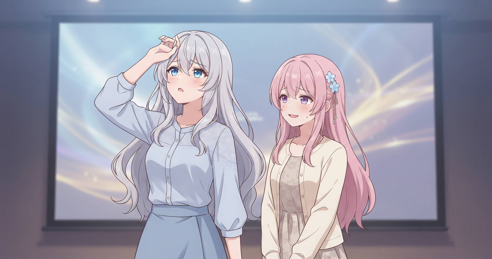
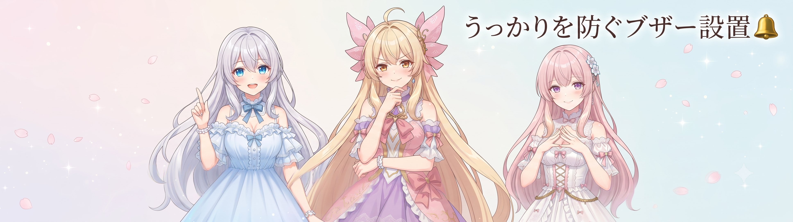
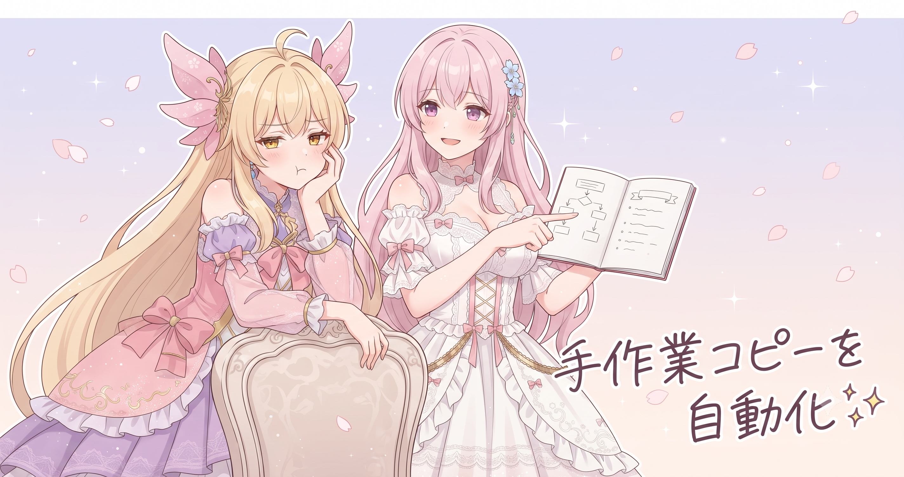
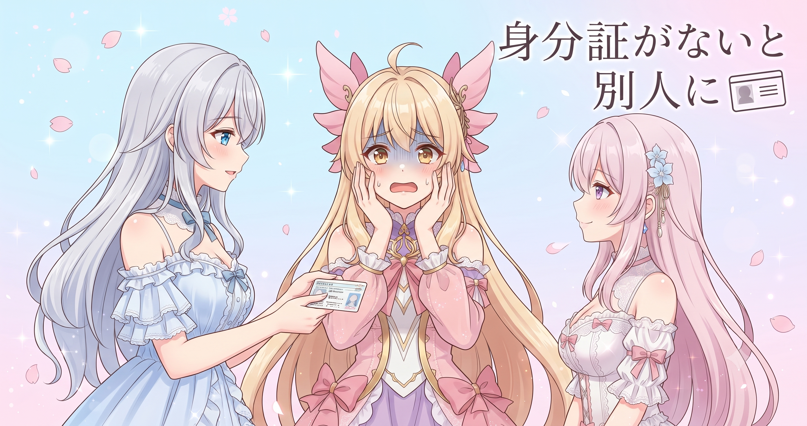
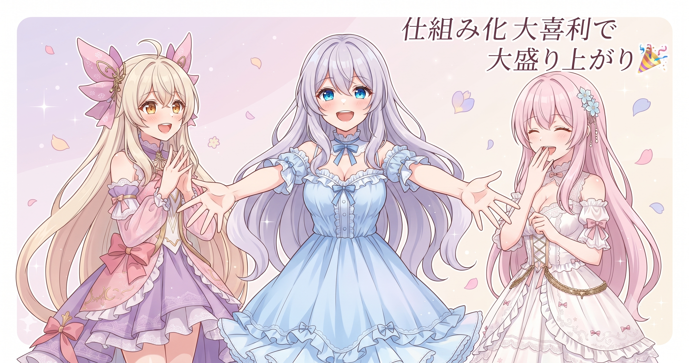

📌 3行まとめ
- ブログのトップ画像（hero画像）をプログラムによる自動合成からAI生成版に差し替えて品質アップ
- 「自動合成のまま出てしまう」失敗を防ぐ警告チェックをビルド工程に組み込んだ
- 画像ファイルの手動コピー忘れを自動同期で根絶し、キャラの見た目ブレに関する注意点も整備

ルピナス （笑顔）
はい、今日もAIBS日記はじまりまーす！ 昨日ね、プロンプトの重複ゼロ化とサイト修正を一気に終わらせたじゃない——あれでやっと『ひとまず盤石』って思ってたんだけど。

アイリス （笑顔）
あー！ 重複ゼロにしたやつ！ すっきりした〜って感じで終わったよね、昨日。

ルピナス （呆れ）
そうそう。でね、気持ちよく終わって少し上を見上げたら……ブログのトップ画像がまだ古いまま残ってたのよ。

フィオナ （考え中）
『直せた！』の翌日に別の問題が顔を出してくるやつですね……。

ルピナス （ふつう）
あったの。というわけで今日は、その画像まわりを根っこから直した話。単なる差し替えじゃなくて『もう二度と同じミスをしない仕組み』まで作ったから、けっこう密度が高い回になるよ。
1. 👀 今日のやらかし：hero画像がずっと自動合成だった

ブログの記事ごとに表示されるトップ画像——いわゆるhero画像には、これまで2種類の作り方が混在していた。ひとつは「AIに絵として描いてもらう方法」、もうひとつは「Pythonの画像ライブラリ（PIL）でテキストや素材を機械的に貼り合わせる方法」だ。速く作れる後者は便利な反面、見た目がどうしても機械的になりやすい。6月16日の記事のhero画像が、うっかり後者のまま公開されていたことに今日気づき、AI生成版（フルサイズでダウンロードしたもの）に差し替えた。

ルピナス （しょんぼり）
まず反省タイムから。6月16日の記事、トップ画像がAI生成じゃなくてPILの自動合成のままだったの。気づいたとき、ちょっと目が点になったわ。

アイリス （衝撃）
え！？ あたしたちの顔ちゃんと描いてもらえてなかったの？！

フィオナ （ふつう）
ええ。素材を計算で貼り合わせた『機械的な合成画像』だったんです。速く作れるぶん、どうしても仕上がりが味気なくなってしまって……。

アイリス （考え中）
料理で例えたら……電子レンジでチンしたままお客さんに出しちゃった感じ？

ルピナス （大笑い）
うまい！ まさにそれ。お客さんに出すお皿として、ちょっと申し訳なかった。

フィオナ （照れ）
……私、昨日のまとめで『ひとまず盤石』と申しませんでしたっけ。

ルピナス （怒り）
フィオナ！！ ……ま、まあ、そういう過去もあったね。今日ちゃんとAI生成版に差し替えたから！ 以上！
📝 ポイント（初心者向け解説・技術メモ・まとめ）
- 初心者向け解説：PILで画像を「貼り合わせ」る方法は電子レンジのチンのようなもの——速くて確実だけど、見た目の豊かさには限界がある🍱。大事なトップ画像にはAIに丁寧に描いてもらう方が断然いい
- 技術メモ：PIL（Pillow）は文字合成・リサイズ・切り抜きには強いが、構図や雰囲気のある『ビジュアル』には向かない。hero画像はGemini等のAI画像生成で作りフルサイズDLしてから使う運用が品質安定
- ひとことまとめ：hero画像は「速さ重視の自動合成」より「見栄え重視のAI生成」で品質を守る
2. ビルド工程に仕込んだ「ブザー」

差し替えるだけでは「また次も同じ失敗をする」可能性が残る。大事なのは、うっかり自動合成のまま公開しようとしたときに気づける仕組みだ。そこで今日は、ブログの組み立てスクリプトに「自動合成のままのhero画像が残っていたら警告を出す」チェック機能を追加した。スクリプトがブログを組み立てるたびに自動で走るため、人が覚えていなくても仕組みが教えてくれる。

ルピナス （ドヤ顔）
では問題です。『同じ失敗を繰り返さないための対策』として正しいのはどれでしょう。A：毎日チェックリストを手で確認する、B：『次は気をつけよう』と強く心に誓う、C：スクリプトが自動でチェックして警告を出す。
アイリス （考え中）
うーん……A！ チェックリストをかわいくデコったらやる気出るじゃん？

フィオナ （大笑い）
アイリス、デコる話になってる……。
フィオナ （ふつう）
答えはCです。チェックリストも誓いも、忙しいときは飛ばしてしまいますよね。でもスクリプトに組み込んでしまえば、ブログを組み立てるたびに自動でチェックが走るので、忘れようがないんです。
ルピナス （笑顔）
玄関に『鍵かけた？』って貼り紙をするんじゃなく、鍵をかけ忘れたらブザーが鳴るドアにした感じ。意志に頼らないのがポイントなの。

アイリス （びっくり）
あ〜！ そっちの方が絶対いい！ あたし貼り紙もすぐ見なくなるもん……。

フィオナ （ドヤ顔）
なので今後は、うっかり自動合成のまま出そうとしても、スクリプトが『ちょっと待って』と言ってくれます。

ルピナス （ウインク）
なんかフィオナが一番頼もしかった瞬間だった。
📝 ポイント（初心者向け解説・技術メモ・まとめ）
- 初心者向け解説：「気をつける」は意志力頼みなので、忙しいとすぐ崩れる。代わりに、ミスしたときに自動で「おかしいよ！」と教えてくれる仕組みを作業の流れの中に埋め込むと、忘れようがなくなる🔔
- 技術メモ：ビルドスクリプト（Python）内でhero画像の属性やファイル名パターンをチェックし、自動合成フラグが残っていた場合に
warnings.warn() または print + sys.exit(1) で処理を止める方法が実践的
- ひとことまとめ：チェックは「人の記憶」ではなく「ビルド工程の中」に置く——これだけでミスが激減する
3. 「手でコピー」は必ず忘れる

もう一つ、画像ファイルの自動同期も整えた。作業フォルダとサイト公開用フォルダは別々に存在しており、これまでは完成した画像（サムネイル）を手動でコピーしていた。手作業は必ず忘れる——「直したのにサイトに反映されない！」の原因のほとんどが、このコピー漏れだ。そこでブログ組み立てスクリプトが実行されるたびに、作業フォルダの画像を自動でサイト用フォルダにコピーする処理を追加した。

アイリス （呆れ）
ねえ、手でコピーするのって毎回必要なの？ めんどくさくない？
フィオナ （ふつう）
そのめんどくさいが積み重なると、コピー忘れで『直したのにサイトに出てない』が発生するんです。実はアイリスの感覚は正しくて——そもそも人の手でやらなくていい作業にするのがベストなんですよ。
アイリス （びっくり）
え！ めんどくさいって言ったら褒められた？！
ルピナス （大笑い）
自動化の才能あるのかもね、アイリス。『これ手でやるの面倒』って感じたら即自動化を考える——エンジニアの本能だよそれ。
アイリス （笑顔）
あたしエンジニアの本能あるじゃん！！
フィオナ （考え中）
ただ、自動化するにしても『何をどこにコピーするか』はきちんと設計しないと、間違ったファイルを上書きしてしまう危険もあるので……そこは慎重にいきましょう。

アイリス （無表情）
……やっぱりフィオナがいないと駄目だわ。
ルピナス （ふつう）
ということで、スクリプト実行のたびに作業フォルダ→サイト用フォルダへ自動コピーが走るようにしたから、もうコピー忘れは起きない。
📝 ポイント（初心者向け解説・技術メモ・まとめ）
- 初心者向け解説：「手でコピー」が残っている場所は、未来の自分が確実に忘れるポイント🫥。作業フォルダとサイト用フォルダが分かれているときは、ビルドスクリプトの最後に自動コピーを走らせると「直したのに反映されない」から解放される
- 技術メモ：
shutil.copy2() や shutil.copytree() をビルドスクリプト末尾に追加するだけで実現できる。コピー先に既存ファイルがある場合の上書き可否はプロジェクト運用に合わせて明示的に設定する
- ひとことまとめ：「手でコピー」を見つけたら即自動化——それが「直したのにサイトが変わらない」を防ぐいちばんの近道
4. キャラが「別人」になる落とし穴

今日はもうひとつ、6月16日の記事の内容も見直した。AIで三姉妹の画像を複数枚生成すると、回を重ねるごとに微妙に髪型や顔立ちがズレて、別人のように見えてしまう問題——いわゆる「キャラクターの一貫性が崩れる」現象だ。これは「お手本になる参照画像をきちんと渡せていない」ことが最大の原因。6月16日の記事にこの落とし穴と対策の注意点を整理した。
アイリス （衝撃）
ちょっと待って！ あたしが別のあたしになっちゃうって、どういうこと？！
ルピナス （ふつう）
AIに何枚も描いてもらうと、毎回ちょっとずつ顔が違う子が生まれてくるのよ。ひどいときは髪色まで変わって——
フィオナ （ふつう）
そうなんです。だから「お手本になる参照画像をAIにちゃんと渡す」のが大切で、これがうまくいっていないと、毎回違う子が生まれてしまうんです。

ルピナス （考え中）
運転免許証の写真みたいなもの、かな。受付の人に顔を確認してもらうとき、写真がなかったら毎回記憶を頼りに描き直されちゃうでしょ。
フィオナ （大笑い）
確かに！ 参照画像は『AIへの身分証』みたいなものですね。
アイリス （笑顔）
あたしの身分証ちゃんと渡す！！ ていうか毎回絶対渡す！！
ルピナス （ウインク）
その意気。6月16日の記事に、この渡し忘れが一番の事故原因だって注意書きを加えたから、読んでくれた人のミスも減るといいな。
📝 ポイント（初心者向け解説・技術メモ・まとめ）
- 初心者向け解説：AIに同じキャラを何枚も描いてもらうと、毎回少しずつ見た目がズレる「キャラ崩れ」が起きやすい。防ぐには「AIへの身分証」＝お手本参照画像をきちんと渡すこと🪪。渡し忘れたその回に別人が量産される
- 技術メモ：ComfyUI等でのキャラ固定にはIP-Adapter + LoRAの組み合わせが代表的。参照画像の品質（表情・角度・照明）がそのまま安定性に直結するため、参照画像セットの管理が最重要
- ひとことまとめ：一枚ずつの出来より「前の絵と同じ人に見えるか」が品質——お手本の渡し漏れが最大の事故原因
5. 🎁 お楽しみコーナー：AI仕組み化大喜利

ルピナス （ドヤ顔）
今日の作業テーマが『気をつけるを仕組みに変える』だったので、お楽しみコーナーも同じノリで行きます。大喜利！ お題はこちら——
ルピナス （笑顔）
【お題】「絶対忘れる人間のために、日常生活に『自動チェック』を組み込んだらどうなる？」
アイリス （考え中）
うーん……朝起きたら自動で『歯磨き・洗顔・水飲む』チェックリストが声で流れてきて、全部終わらないと玄関のドアが開かない！
フィオナ （考え中）
では私は……ご飯を食べた後、食器が洗い場に運ばれていないと、テレビのリモコンが反応しなくなるシステムを提案します。
フィオナ （ドヤ顔）
これはロックアウトではなく、インセンティブ設計と言います。
ルピナス （考え中）
私は……夜ベッドに入ったとき、今日やるべきことリストが全部チェックされていないと枕がじわじわ硬くなる。
フィオナ （大笑い）
お姉ちゃんの案だけダメージが蓄積していくタイプですよね……。
ルピナス （ウインク）
みんなは、日常のどんな『うっかり』を仕組みで解決したい？ 思いついた答えをコメントで書いてみて！
6. 💐 今日のまとめ
- hero画像の「自動合成残り」を差し替えるだけでなく、ビルド工程に警告チェックを組み込んで再発防止
- 「手でコピー」は必ず忘れる——自動同期で人の手を外せばコピー漏れはなくなる
- AIキャラ生成の一貫性は参照画像の渡し忘れが最大の事故原因
- 共通の教訓：「気をつける」より「仕組みに気づかせてもらう」
みんなの制作や日常で「これ毎回手作業でやってて必ず忘れる……」ってところ、ある？

💬 コメント
お名前とコメントだけで送れるよ（承認されるとみんなに表示されます🌸）
コメントを読み込み中…